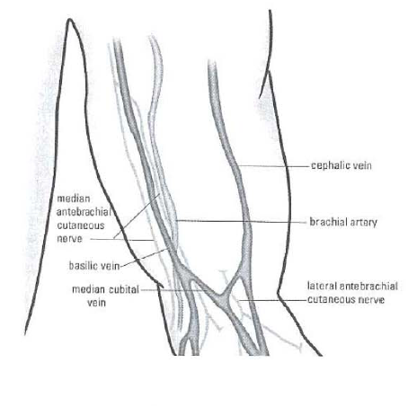
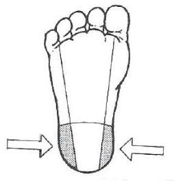
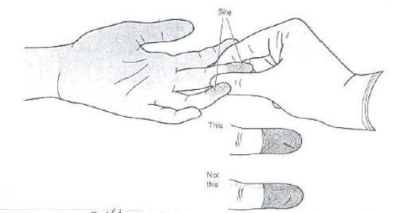

شبنم رضاپور
کسی که PDFها را راضی کرد محتوایشان را بیکموکاست لو بدهند.
این جزوه با استفاده از جزوهساز پاپیروس و به صورت خودکار تولید شده است. ممکن است شامل خطا یا برداشت نادرست باشد و نیازمند بررسی و بازبینی مجدد است.
متغیرهای پیشآنالیتیک میتوانند بر نتایج آزمایش اثر بگذارند، حتی اگر مرحله آنالیتیک بهدرستی انجام شده باشد. ازاینرو، شناسایی این متغیرها و استانداردکردن روشهای آزمایشگاهی برای تفسیر صحیح نتایج ضروری است. این مبحث به عوامل مؤثر بر نتایج و روش استاندارد نمونهگیری وریدی و مویرگی، از جمله آمادهسازی بیمار، انتخاب محل و وسایل نمونهگیری، جمعآوری و نگهداری نمونه و پیشگیری از عوارض میپردازد.
متغیرهای مختلفی بر نتایج آزمایشها اثر میگذارند؛ این اثر حتی در صورت انجام صحیح و دقیق آزمایش در مرحله آنالیتیک (analytic) نیز ممکن است رخ دهد. بنابراین، شناسایی این متغیرها و استانداردکردن روشهای آزمایشگاهی برای تفسیر صحیح و استفاده بهینه از دادههای آزمایشگاهی ضروری است.
گروهی از متغیرهای مرحله پیشآنالیتیک (pre-analytic) میتوانند بر نتایج آزمایش اثر بگذارند. این متغیرها عبارتاند از:
از میان این متغیرها، نحوه نمونهگیری مستقیماً بر نتایج آزمایش اثر دارد و آموزش کارکنان مرتبط میتواند بسیاری از خطاهای این مرحله را کاهش دهد. این دستورالعمل با استفاده از منابع معتبر بینالمللی و برای آموزش ردههای مختلف ارائهدهندگان خدمات تشخیصیـدرمانی، از جمله کارکنان آزمایشگاه و پرستاران، روش استاندارد نمونهگیری وریدی و مویرگی از بیماران سرپایی و بستری را شرح میدهد.
نمونهگیری باید در محلی مجزا، تمیز و ساکت انجام شود. اتاق باید دستشویی داشته باشد و اگر دسترسی به آب وجود ندارد، محلولهای تمیزکننده دست در دسترس باشد.
خونگیری صحیح به دانش و مهارت توأم نیاز دارد. خونگیر باتجربه برای جمعآوری نمونه خون وریدی باید مراحل زیر را دنبال کند.
مشخصات برگه درخواست آزمایش باید با مشخصات بیمار تطبیق داده شود. برای بیمار سرپایی، این تطبیق باید با پرسش و پاسخ از خود بیمار انجام شود.
بعضی آزمایشها مستلزم ناشتا بودن یا حذف برخی مواد از رژیم غذایی پیش از خونگیری هستند. محدودیت غذایی و مدت آن برحسب نوع آزمایش متفاوت است و رعایت این محدودیتها برای دستیابی به نتایج صحیح ضروری است.
بر اساس نوع آزمایش، سرسوزن مناسب یا لوله خلأ انتخاب شود. اگر از سرنگ استفاده میشود، سرسوزن مناسب باید با توجه به نوع و محل ورید و حجم خون مورد نیاز انتخاب شود. پیش از استفاده، بازبودن سوراخ ورودی خون در نوک سرسوزن بررسی شود و حرکت پیستون سرنگ برای اطمینان از سهولت و کنترل حرکت ارزیابی شود. برحسب نوع آزمایش، لوله مناسب از نظر اندازه و نوع ماده ضدانعقاد انتخاب شود.
بهطور کلی، برای رعایت اصول ایمنی توصیه میشود از سرنگ و سرسوزن استفاده نشود و لولههای خلأ جایگزین آنها شوند.
نمونهگیر باید از دستکش استفاده کند.
بیمار روی صندلی نمونهگیری مینشیند و برای برجستهشدن وریدها مشت میکند. دست را بهصورت کشیده روی دسته صندلی قرار میدهد، بهگونهای که بازو تا مچ دست در یک خط مستقیم باشد. بیمار نباید مشت خود را باز و بسته کند، زیرا این کار باعث تغییر بعضی مواد خون میشود.
اگر از تخت استفاده شود، بیمار باید به پشت بخوابد و در صورت نیاز، زیر بازویی که از آن نمونه گرفته میشود بالش قرار گیرد. بیمار دست خود را طوری میکشد که از شانه تا مچ در یک خط مستقیم قرار گیرد.
هنگام نمونهگیری، بیمار نباید غذا، مایعات، آدامس یا دماسنج را در دهان داشته باشد.
برای افزایش پرشدن ورید از خون و برجستهشدن رگ موردنظر، و نیز تسهیل ورود خون به سرنگ یا لولههای خلأ، از بازوبند یا تورنیکه استفاده میشود. در بعضی آزمایشها، از جمله اندازهگیری لاکتات خون، نباید تورنیکه بسته شود.
بازوبند باید 7.5–10 سانتیمتر بالاتر از محل نمونهگیری بسته شود و بیش از یک دقیقه روی بازوی بیمار باقی نماند. باقیماندن طولانیتر آن موجب توقف موضعی خون، تغلیظ خون و انتشار آن به داخل بافتها میشود و در نتیجه، افزایش کاذب تمام ترکیبات متصل به پروتئین و هماتوکریت رخ میدهد.
اگر بیمار مشکل پوستی داشته باشد، بازوبند باید روی لباس بیمار یا روی گاز بسته شود تا پوست تحت فشار قرار نگیرد. اگر وریدهای سطحی بهخوبی مشخص نباشند، میتوان با ماساژ از مچ تا آرنج یا با کمک وسیله گرمکننده، محل نمونهگیری را گرم کرد تا وریدها اتساع یابند. در صورت استفاده از دستگاه فشارخون، درجه آن باید روی 40 میلیمتر جیوه تنظیم شود. اگر تلاش نخست موفق نبود، توصیه میشود تورنیکه باز شود و پس از دو دقیقه دوباره روی بازوی بیمار بسته شود.
در بیشتر موارد، نمونهگیری از وریدهای Median cubital و Cephalic انجام میشود. وریدهای پشت دست نیز قابلقبولاند، اما نباید از وریدهای سطح داخلی مچ استفاده شود.

تصویر 1متن قابلمشاهده در تصویر: cephalic vein؛ median antebrachial cutaneous nerve؛ brachial artery؛ basilic vein؛ lateral antebrachial cutaneous nerve؛ median cubital vein.
ورید Median cubital بهدلیل سطحیبودن، درد کمتر، ثابتشدن بهتر هنگام ورود سوزن و احتمال کمتر آسیب به عصب در صورت قرارگیری نامناسب سوزن، ارجح است. چون ورید Basilic به شریان Brachial و عصب Median نزدیک است، فقط در صورت در دسترس نبودن سایر وریدها باید از آن استفاده کرد.
از وریدهای نواحی دیگر، مانند قوزک پا یا اندام تحتانی، بدون اجازه پزشک نباید نمونهگیری شود؛ زیرا احتمال عوارضی مانند فلبیت، ترومبوز و نکروز بافت وجود دارد.
اگر هنگام خونگیری به نمونهگیری شریانی مشکوک شویم، بهدلیل عبور شریان Brachial از ناحیه Antecubital، پس از خارجکردن سوزن باید دستکم ۵ دقیقه فشار مستقیم روی محل وارد شود تا خونریزی بند بیاید؛ سپس باید سریعاً به سوپروایزر یا مسئول فنی اطلاع داد. خونگیری شریانی بهدلیل تفاوت مواد موجود در خون وریدی و شریانی، فقط در موارد خاص، مانند بررسی اسید و باز، الکترولیتها و بعضی متابولیتها، کاربرد دارد و نباید جایگزین خونگیری وریدی شود؛ مگر در شرایط ویژهای که نمونهگیری وریدی بههیچوجه ممکن نباشد و آن هم با نظارت پزشک.
نمونهگیر باید ورید را با انگشت سبابه لمس کند و مسیر آن را برای تعیین محل خونگیری مشخص سازد. برخلاف وریدها، شریانها نبض دارند، دیواره ضخیمتری دارند و خاصیت ارتجاعی آنها بیشتر است. از وریدهای ترومبوزه که حالت ارتجاعی خود را از دست دادهاند، طنابیشکل شدهاند و بهآسانی میلغزند، نباید خونگیری کرد. در نهایت، باید وریدی انتخاب شود که هم برای بیمار راحت باشد و هم خطر آسیب به اعصاب و شریانهای ناحیه نمونهگیری را به حداقل برساند.
محل نمونهگیری با گاز آغشته به الکل ایزوپروپیل یا اتیل 70٪، با حرکت دورانی از داخل به خارج، تمیز میشود. پس از خشکشدن موضع در هوا، نمونهگیری انجام میشود تا از همولیز و اثر تماس نوک سوزن با الکل و پوست جلوگیری شود.
برای کشت خون، ضدعفونی محل نمونهگیری باید با دقت بیشتری انجام شود. برای نوزادان دوماهه و بزرگتر و نیز بزرگسالانی که به ید حساسیت دارند، کلرهگزیدین گلوکونات پیشنهاد شده است. ابتدا موضع با الکل 70٪ تمیز میشود؛ سپس از محلول Povidone–iodine با غلظت 1–10٪ یا کلرهگزیدین گلوکونات برای ضدعفونی استفاده میشود. پس از خشکشدن، موضع دوباره با الکل تمیز میشود تا ید و کلرهگزیدین حذف شوند. پس از خونگیری، درِ شیشههای کشت خون نیز باید طبق دستورالعمل سازنده ضدعفونی شود.
سوزن با زاویه 30 درجه یا کمتر، درحالیکه قسمت مورب نوک آن رو به بالا است، وارد ورید میشود تا لوله خلأ بههمراه نگهدارنده یا سرنگ به ورید متصل شود. بهمحض ورود خون به سرنگ یا لوله خلأ، بازوبند باید باز شود.
اگر خون وارد سرنگ یا لوله خلأ نشد، سوزن را کمی جابهجا کنید تا بهدرستی درون ورید قرار گیرد. جابهجایی بیش از حد سوزن توصیه نمیشود، زیرا برای بیمار ناخوشایند و دردناک است. در بیشتر موارد، بهتر است نمونهگیری دوباره در محلی پایینتر از محل نخست یا از بازوی دیگر انجام شود. اگر نمونهگیری بیش از دو بار موفق نبود، بهتر است از نمونهگیر دیگری کمک گرفته شود و در صورت نیاز، پزشک مطلع شود. پس از جاریشدن روان خون به داخل سرنگ یا لولههای خلأ، بیمار باید مشت خود را باز کند.
در پایان، سرسوزن بهآرامی از رگ خارج و گاز تمیز با فشار کم روی موضع گذاشته میشود.
سرسوزن آلوده باید بدون گذاشتن درپوش، با استفاده از ظرف مخصوص از سرنگ جدا و دفع شود. سپس نمونه خون بهآرامی در ظرف مربوطه تخلیه شود.
نمونهای که در لوله حاوی ضدانعقاد ریخته میشود باید بیدرنگ و بهآرامی 5 تا 10 بار مخلوط شود. اگر نمونه در لوله بدون ماده ضدانعقاد ریخته شود، باید بهآرامی در امتداد دیواره داخلی لوله تخلیه شود.
اگر در یک نوبت نمونهگیری از چند لوله خلأ پلاستیکی یا شیشهای برای آزمایشهای مختلف استفاده شود، خون برای جلوگیری از تداخل ضدانعقادهای گوناگون باید با ترتیب زیر در لولهها جمعآوری شود:
| ترتیب | نوع لوله و افزودنی | کاربرد/شناسه درپوش |
|---|---|---|
| 1 | لوله کشت خون | کشت خون |
| 2 | ضدانعقاد سیترات سدیم | آزمایشهای انعقادی؛ درپوش آبی در لولههای خلأ |
| 3 | ضدانعقاد سیترات سدیم | آزمایش سدیمانتاسیون؛ درپوش مشکی و از نوع پلاستیکیِ غیرخلأ |
| 4 | لوله سرم، بدون ضدانعقاد و بدون فعالکننده لخته یا ژل | درپوش قرمز در لولههای خلأ؛ یا لوله حاوی ژل جداکننده |
| 5 | هپارین، با یا بدون ژل جداکننده پلاسما | درپوش سبز یا درپوش سرمهای در لولههای خلأ |
| 6 | ضدانعقاد EDTA | درپوش بنفش در لولههای خلأ |
ترتیب جمعآوری در لولههای دوم و سوم با توجه به اثر فعالکننده لخته یا ژل در لولههای پلاستیکی و آزمایشهای انعقادی مطرح شده است. اگر از لوله شیشهای بدون افزودنی استفاده شود، این لوله میتواند پیش از لوله سیتراته قرار گیرد. اگر از ست پروانهای (یا اسکالپوین) برای آزمایشهای انعقادی استفاده شود، ابتدا باید قسمت اول نمونه در یک لوله تخلیه شود تا فضای مرده حذف شود و سپس نمونه موردنیاز در لوله دیگری جمعآوری شود.
پس از پایان نمونهگیری، محل باید از نظر بندآمدن خونریزی و ایجاد هماتوم کنترل شود. اگر خونریزی بیش از ۵ دقیقه ادامه یافت، باید با گاز روی محل نمونهگیری فشار وارد شود تا خونریزی بند بیاید. سپس محل باندپیچی شود و به بیمار توصیه شود باند را دستکم ۱۵ دقیقه روی محل نگه دارد. در صورت نیاز، باید سوپروایزر یا مسئول فنی را مطلع کرد.
بلافاصله پس از پایان نمونهگیری، باید برچسب حاوی اطلاعات زیر روی لولهها و ظروف نمونه خون بیمار چسبانده شود:
| مرحله | اقدام یا ملاحظه اصلی |
|---|---|
| تطبیق مشخصات | تطبیق برگه درخواست با مشخصات بیمار؛ برای بیمار سرپایی، با پرسش و پاسخ از خود بیمار |
| آمادگی بیمار | بررسی ناشتا بودن یا محدودیت غذایی و قرارگیری مناسب بیمار |
| انتخاب تجهیزات | انتخاب سوزن و لوله متناسب با آزمایش، نوع و محل ورید و حجم خون |
| انتخاب و آمادهسازی ورید | بستن تورنیکه در شرایط مجاز، انتخاب ورید مناسب و تمیزکردن محل |
| جمعآوری | ورود سوزن با زاویه 30 درجه یا کمتر، بازکردن تورنیکه پس از ورود خون و رعایت ترتیب لولهها |
| پایان کار | دفع ایمن سرسوزن، کنترل خونریزی و هماتوم و برچسبگذاری فوری نمونه |
برای خونگیری از اطفال باید از سرسوزن ظریف 22–23G یا ست پروانهای استفاده شود. معمولاً در نمونهگیری از اطفال و نوزادان حجم خون کمتری گرفته میشود؛ بنابراین، آزمایشگاه باید شیشهها و لولههایی با حجم مناسب و ضدانعقاد مناسب آماده کند.
| عارضه | موارد ذکرشده برای پیشگیری |
|---|---|
| هماتوم | سوراخکردن دیواره بالایی ورید؛ بازکردن بازوبند پیش از خارجکردن سوزن؛ استفاده از وریدهای سطحی اصلی؛ واردکردن فشار اندک پس از نمونهگیری |
| همولیز | خشکشدن محل پس از ضدعفونی؛ استفادهنکردن از سرسوزن کوچک؛ نمونهگیرینکردن از هماتوم؛ اتصال کامل سوزن به سرنگ و کشیدن آرام پیستون؛ مخلوطکردن آرام نمونه |
بعضی نمونهها باید بهدلیل درمان دارویی، نیاز به ناشتا بودن یا تغییرات طی روز (ریتم سیرکادین) در فاصلههای زمانی مشخص گرفته شوند؛ بنابراین، نمونهگیر باید از این الزامات آگاه باشد. برای مثال، آزمایشهای تحمل گلوکز ۲ و ۳ ساعته، کورتیزول و ردیابی سطح دارو از آزمایشهایی هستند که زمان نمونهگیری در آنها اهمیت دارد. در ردیابی سطح دارو باید دوز دارو، زمان آخرین مصرف و زمان نمونهگیری ثبت شود.
برای جمعآوری، انتقال و نگهداری نمونههای کشت خون باید الزامات مربوط به زمان نمونهگیری و دما رعایت و ثبت شود.
| نوع نمونه یا آزمایش | ملاحظه ذکرشده |
|---|---|
| عناصر کمیاب | خونگیری در ظرف فاقد آهن |
| ایمونوهِماتولوژی | استفادهنکردن از لولههای خلأ حاوی ژل جداکننده برای تهیه سرم یا پلاسما |
| هموسیستئین، ACTH، گاسترین، آمونیاک، اسید لاکتیک، کاتکولامینها، هورمون پاراتیروئید و گازهای خون | نگهداری نمونه در یخچال بلافاصله پس از جمعآوری |
| کشت خون | رعایت و ثبت الزامات مربوط به زمان نمونهگیری و دما |
کارکنان بخش نمونهگیری باید هنگام نمونهگیری و جابهجایی نمونه بیماران همیشه روپوش دکمهبسته و دستکش داشته باشند. دستکش در صورت آلودگی یا بین نوبتهای نمونهگیری باید تعویض شود و نباید شسته و دوباره استفاده شود. توصیه میشود دستها در فاصلههای بین نمونهگیری بهتناوب شسته شوند.
درپوش سرسوزن را نباید با دست دوباره روی آن گذاشت یا برای جداکردن سرسوزن از سرنگ از دست استفاده کرد. سرسوزن نباید قیچی، بریده، خم یا شکسته شود.
پسماندهای تیز، برنده و آلوده، مانند سرسوزنها و وسایل شیشهای شکسته، باید در ظرف ایمن (Safety Box) جمعآوری شوند. هنگامی که ظرف تا 3/4 پر شد، باید پس از اتوکلاو به روش بهداشتی دفع شود.
اگر هر قسمت از اتاق نمونهگیری آلوده شود، باید سریعاً با مواد ضدعفونیکننده، مانند هیپوکلریت سدیم، ضدعفونی شود. متن مربوط به مقدار و رقت محلول، «۵ گرم در لیتر یا ۰٫۵ …» و نیز رقیقکردن سفیدکننده خانگی با شرط مقدار کلر فعال را ذکر میکند، اما ارقام این بخش در متن اسلاید بهصورت ناسازگار و نامطمئن درج شدهاند. محلول باید برای هر بار استفاده تازه تهیه شود.
در صورت فرورفتن سوزن یا هر وسیله تیز و برنده در بدن، باید دستکش را خارج کرد، روی محل فشار داد تا خون خارج شود، موضع را با آب و صابون شست و حادثه را به مسئول ایمنی و مسئول فنی آزمایشگاه گزارش کرد. همچنین باید فرم ثبت، گزارش و پیگیری حوادث مخاطرهآمیز تکمیل شود.
لولههای خلأ بهشکل تجاری تهیه میشوند و رنگ درپوش آنها بر اساس کاربرد و ماده ضدانعقاد متفاوت است. انواع مورد استفاده در ایران شامل موارد زیر است:
| رنگ درپوش | ماده افزودنی یا ضدانعقاد | کاربرد |
|---|---|---|
| قرمز | بدون افزودنی؛ لوله سرم | بیوشیمی، ایمونولوژی، بانک خون و سرولوژی |
| طلایی | فعالکننده لخته همراه با ژل جداکننده | بیوشیمی، ایمونولوژی، بانک خون و سرولوژی |
| بنفش | نمکهای EDTA | بانک خون و هماتولوژی |
| آبی روشن | سیترات سدیم | تستهای انعقادی |
| مشکی | سیترات سدیم | ESR |
| سبز | هپارین لیتیوم یا سدیم | آزمایشهایی از جمله آمونیاک؛ در متن جدول کاربردهای دیگری نیز برای لولههای هپارینه درج شده است. |
ژل جداکننده حاوی مادهای خنثی است که طی سانتریفیوژ موجب تغییر موقت ویسکوزیته خون میشود. چگالی ژل باعث میشود ژل میان سلولها و سرم یا پلاسما قرار گیرد.
لولههای خلأ حاوی ضدانعقاد باید تا انتهای مکش از خون پر شوند. رنگ درپوش این نوع لولهها ممکن است بر اساس کارخانه سازنده متفاوت باشد. اگر لولههای CBC حاوی ضدانعقاد بهصورت تجاری تهیه شوند، باید برچسب آنها شامل نوع نمک EDTA، وزن یا حجم نمک مورد استفاده، حجم خون موردنیاز، تاریخ انقضا و شرایط نگهداری باشد.
نمونهگیری از طریق سوراخکردن پوست (Skin Puncture) در اطفال و نوزادان اهمیت ویژهای دارد. خونگیری وریدی در این گروه ممکن است با مشکلات زیادی همراه باشد و گاهی، حتی بدون نیاز به حجم زیاد خون، موجب برداشت خون زیاد از نوزاد شود. این مسئله در نوزادان نارس میتواند به کمخونی منجر شود؛ بنابراین، نمونهگیری از طریق سوراخکردن پوست ضرورت پیدا میکند.
این روش در موارد زیر در بزرگسالان نیز قابلاجراست:
اگر بیمار دهیدراته باشد یا بهدلیل شوک گردش خون محیطی ضعیفی داشته باشد، ممکن است نمونهگیری غیرممکن باشد.
خون حاصل از سوراخکردن پوست حاوی نسبتهایی از خون آرتریولی، مویرگی و ونولی، مایع بینبافتی و مایع داخلسلولی است. نسبت خون سرخرگی در آن از خون سیاهرگی بیشتر است و گرمکردن موضع میتواند این نسبت را تا هفت برابر افزایش دهد.
نواحی مناسب برای سوراخکردن پوست عبارتاند از:

تصویر 2در نوزادان کمتر از یک سال معمولاً از پاشنه پا نمونهگیری میشود. در اطفال و بزرگسالان معمولاً از بند آخر انگشت سوم یا چهارم نمونه گرفته میشود.
از نواحی زیر نباید نمونهگیری کرد:
| گروه/ناحیه | محلهای مناسب یا نامناسب |
|---|---|
| نوزادان کمتر از یک سال | معمولاً پاشنه پا؛ ناحیه مرکزی پاشنه و انگشتان دست یا پای نوزادان و اطفال کمتر از یک سال نباید انتخاب شوند |
| اطفال و بزرگسالان | معمولاً بند آخر انگشت سوم یا چهارم |
| محلهای مناسب بهطور کلی | بند انتهایی انگشتان دست؛ سطح داخلی و خارجی پاشنه پا |
| محلهای نامناسب | نرمه گوش؛ ناحیه مرکزی پاشنه پا در نوزادان؛ انگشتان دست یا پای نوزادان و اطفال کمتر از یک سال؛ نواحی متورم یا قبلاً سوراخشده |
نمونهگیری باید از سطح داخلی بند آخر انگشت دست انجام شود. سطح جانبی و نوک انگشتان مناسب نیستند، زیرا عمق پوست در این دو ناحیه نصف قسمت مرکزی بند انگشت است. برش باید در عرض اثر انگشت باشد، نه موازی با آن.

تصویر 3انگشتهای میانه و چهارم برای نمونهگیری مناسبترند؛ انگشت شست نبض دارد و انگشت اشاره حساستر است و پوست آن گاهی سختتر است. انگشت پنجم بهدلیل نازکی پوست برای نمونهگیری مناسب نیست.
| انگشت/محل در بزرگسالان | ملاحظه |
|---|---|
| سطح داخلی بند آخر انگشت | محل نمونهگیری |
| سطح جانبی و نوک انگشت | مناسب نیست؛ عمق پوست در این دو ناحیه نصف قسمت مرکزی بند انگشت است |
| انگشتهای میانه و چهارم | مناسبتر برای نمونهگیری |
| انگشت شست | نبض دارد |
| انگشت اشاره | حساستر است و پوست آن گاهی سختتر است |
| انگشت پنجم | بهدلیل نازکی پوست مناسب نیست |
| جهت برش | در عرض اثر انگشت، نه موازی با آن |
موضع موردنظر با محلول 70٪ ایزوپروپانول یا اتانول ضدعفونی میشود. پس از خشکشدن موضع در مجاورت هوا، با لانست استریل نمونهگیری انجام میشود. اولین قطره خون با گاز پاک میشود و قطرههای بعدی در لولههای میکروهماتوکریت حاوی 4 تا 6 واحد هپارین یا قطرهقطره در لولههای بسیار کوچک جمعآوری میشوند. لولههای میکروهماتوکریت باید از خون پر شوند و انتهای آنها سریعاً با خمیر هماتوکریت بسته شود. اگر از لولههای بسیار کوچک استفاده میشود، باید حجم مناسب خون با توجه به ماده ضدانعقاد داخل لوله جمعآوری شود و لولهها بلافاصله پس از بستن، در مخلوط شوند.
همولیز ممکن است به دلایل زیر رخ دهد:
| عامل مرتبط با همولیز در نمونهگیری مویرگی | مورد ذکرشده |
|---|---|
| ضدعفونی موضع | باقیماندن الکل |
| جمعآوری نمونه | واردکردن فشار زیاد برای بهدستآوردن نمونه یا قطرههای خون بیشتر |
| وضعیت خون | هماتوکریت بالاتر از حد طبیعی یا شکنندهتر بودن گلبولهای قرمز، مانند نوزادان |
| پس از جمعآوری | مخلوطکردن شدید و بیش از حد نمونه |
تفاوت نتایج آزمایش بین نمونههای خون وریدی و مویرگی معمولاً ناچیز است، اما اختلاف آماری یا بالینیِ باارزشی در اندازهگیری غلظت گلوکز، پتاسیم، پروتئین تام و کلسیم گزارش شده است. بهجز گلوکز، غلظت این ترکیبات در نمونه خون مویرگی پایینتر است. بنابراین، اگر نمونهگیری مویرگی انجام شود، پیشنهاد میشود نوع خونگیری در برگه گزارش آزمایش درج شود.
درباره پارامترهای هماتولوژیک، بعضی مطالعات تفاوتهای قابلاغماض میان خون مویرگی و وریدی گزارش کردهاند و بعضی دیگر وجود تفاوت را تأیید میکنند. این تفاوت ممکن است با سردبودن موضع نمونهگیری مویرگی تشدید شود. در برخی منابع، درصد هماتوکریت، غلظت هموگلوبین، شمارش گلبولهای قرمز، شمارش لکوسیتها، نوتروفیلها (حدود 8٪) و مونوسیتها (حدود 12٪) در خون مویرگی بالاتر از خون وریدی ذکر شده است. برعکس، شمارش پلاکتها در خون وریدی بالاتر است؛ بهدلیل چسبیدن پلاکتها در محل نمونهگیری مویرگی.
| مورد مقایسه | تفاوت ذکرشده میان خون مویرگی و وریدی |
|---|---|
| تفاوت کلی نتایج | معمولاً ناچیز؛ بااینحال، برای بعضی اندازهگیریها اختلاف آماری یا بالینیِ باارزش گزارش شده است |
| گلوکز | در شمار ترکیباتی است که اختلاف آماری یا بالینیِ باارزش برای آن گزارش شده؛ جهت اختلاف در متن مشخص نشده است |
| پتاسیم، پروتئین تام و کلسیم | اختلاف آماری یا بالینیِ باارزش گزارش شده؛ بهجز گلوکز، غلظت این ترکیبات در نمونه مویرگی پایینتر است |
| پارامترهای هماتولوژیک | بعضی مطالعات تفاوت قابلاغماض و بعضی دیگر وجود تفاوت را گزارش کردهاند؛ سردبودن موضع ممکن است تفاوت را تشدید کند |
| هماتوکریت، هموگلوبین، گلبولهای قرمز، لکوسیتها، نوتروفیلها و مونوسیتها | در برخی منابع در خون مویرگی بالاتر ذکر شدهاند؛ نوتروفیلها حدود 8٪ و مونوسیتها حدود 12٪ |
| پلاکتها | شمارش در خون وریدی بالاتر است؛ بهدلیل چسبیدن پلاکتها در محل نمونهگیری مویرگی |
| گزارش آزمایش | در صورت نمونهگیری مویرگی، پیشنهاد میشود نوع خونگیری در برگه گزارش درج شود |
| مرحله | اقدام یا ملاحظه |
|---|---|
| تطبیق مشخصات | تطبیق برگه درخواست با مشخصات بیمار؛ برای بیمار سرپایی با پرسش و پاسخ از خود بیمار |
| آمادگی بیمار | بررسی ناشتا بودن یا محدودیت غذایی و قرارگیری مناسب بیمار |
| انتخاب تجهیزات | انتخاب سوزن و لوله متناسب با آزمایش، نوع و محل ورید و حجم خون |
| آمادهسازی ورید | بستن تورنیکه در شرایط مجاز، انتخاب ورید مناسب و تمیزکردن محل |
| جمعآوری | ورود سوزن با زاویه 30 درجه یا کمتر، بازکردن تورنیکه پس از ورود خون و رعایت ترتیب لولهها |
| پایان کار | دفع ایمن سرسوزن، کنترل خونریزی و هماتوم و برچسبگذاری فوری نمونه |
| ترتیب | نوع لوله و افزودنی | کاربرد/شناسه درپوش |
|---|---|---|
| 1 | لوله کشت خون | کشت خون |
| 2 | ضدانعقاد سیترات سدیم | آزمایشهای انعقادی؛ درپوش آبی در لولههای خلأ |
| 3 | ضدانعقاد سیترات سدیم | آزمایش سدیمانتاسیون؛ درپوش مشکی و از نوع پلاستیکیِ غیرخلأ |
| 4 | لوله سرم، بدون ضدانعقاد و بدون فعالکننده لخته یا ژل | درپوش قرمز در لولههای خلأ؛ یا لوله حاوی ژل جداکننده |
| 5 | هپارین، با یا بدون ژل جداکننده پلاسما | درپوش سبز یا درپوش سرمهای در لولههای خلأ |
| 6 | ضدانعقاد EDTA | درپوش بنفش در لولههای خلأ |
اگر از لوله شیشهای بدون افزودنی استفاده شود، این لوله میتواند پیش از لوله سیتراته قرار گیرد. اگر از ست پروانهای (یا اسکالپوین) برای آزمایشهای انعقادی استفاده شود، ابتدا باید قسمت اول نمونه در یک لوله تخلیه شود تا فضای مرده حذف شود و سپس نمونه موردنیاز در لوله دیگری جمعآوری شود.
| رنگ درپوش | ماده افزودنی یا ضدانعقاد | کاربرد |
|---|---|---|
| قرمز | بدون افزودنی؛ لوله سرم | بیوشیمی، ایمونولوژی، بانک خون و سرولوژی |
| طلایی | فعالکننده لخته همراه با ژل جداکننده | بیوشیمی، ایمونولوژی، بانک خون و سرولوژی |
| بنفش | نمکهای EDTA | بانک خون و هماتولوژی |
| آبی روشن | سیترات سدیم | تستهای انعقادی |
| مشکی | سیترات سدیم | ESR |
| سبز | هپارین لیتیوم یا سدیم | آزمایشهایی از جمله آمونیاک؛ در متن جدول کاربردهای دیگری نیز برای لولههای هپارینه درج شده است. |
| عارضه | موارد ذکرشده برای پیشگیری |
|---|---|
| هماتوم | سوراخکردن دیواره بالایی ورید؛ بازکردن بازوبند پیش از خارجکردن سوزن؛ استفاده از وریدهای سطحی اصلی؛ واردکردن فشار اندک پس از نمونهگیری |
| همولیز | خشکشدن محل پس از ضدعفونی؛ استفادهنکردن از سرسوزن کوچک؛ نمونهگیرینکردن از هماتوم؛ اتصال کامل سوزن به سرنگ و کشیدن آرام پیستون؛ مخلوطکردن آرام نمونه |
| نوع نمونه یا آزمایش | ملاحظه ذکرشده |
|---|---|
| عناصر کمیاب | خونگیری در ظرف فاقد آهن |
| ایمونوهِماتولوژی | استفادهنکردن از لولههای خلأ حاوی ژل جداکننده برای تهیه سرم یا پلاسما |
| هموسیستئین، ACTH، گاسترین، آمونیاک، اسید لاکتیک، کاتکولامینها، هورمون پاراتیروئید و گازهای خون | نگهداری نمونه در یخچال بلافاصله پس از جمعآوری |
| کشت خون | رعایت و ثبت الزامات مربوط به زمان نمونهگیری و دما |
| ردیابی سطح دارو | ثبت دوز دارو، زمان آخرین مصرف و زمان نمونهگیری |
| آزمایشهای تحمل گلوکز ۲ و ۳ ساعته و کورتیزول | زمان نمونهگیری اهمیت دارد |
| گروه/ناحیه | محلهای مناسب یا نامناسب |
|---|---|
| نوزادان کمتر از یک سال | معمولاً پاشنه پا؛ ناحیه مرکزی پاشنه و انگشتان دست یا پای نوزادان و اطفال کمتر از یک سال نباید انتخاب شوند |
| اطفال و بزرگسالان | معمولاً بند آخر انگشت سوم یا چهارم |
| محلهای مناسب بهطور کلی | بند انتهایی انگشتان دست؛ سطح داخلی و خارجی پاشنه پا |
| محلهای نامناسب | نرمه گوش؛ ناحیه مرکزی پاشنه پا در نوزادان؛ انگشتان دست یا پای نوزادان و اطفال کمتر از یک سال؛ نواحی متورم یا قبلاً سوراخشده |
| انگشت/محل | ملاحظه |
|---|---|
| سطح داخلی بند آخر انگشت | محل نمونهگیری |
| سطح جانبی و نوک انگشت | مناسب نیست؛ عمق پوست در این دو ناحیه نصف قسمت مرکزی بند انگشت است |
| انگشتهای میانه و چهارم | مناسبتر برای نمونهگیری |
| انگشت شست | نبض دارد |
| انگشت اشاره | حساستر است و پوست آن گاهی سختتر است |
| انگشت پنجم | بهدلیل نازکی پوست مناسب نیست |
| جهت برش | در عرض اثر انگشت، نه موازی با آن |
| عامل | مورد ذکرشده |
|---|---|
| ضدعفونی موضع | باقیماندن الکل |
| جمعآوری نمونه | واردکردن فشار زیاد برای بهدستآوردن نمونه یا قطرههای خون بیشتر |
| وضعیت خون | هماتوکریت بالاتر از حد طبیعی یا شکنندهتر بودن گلبولهای قرمز، مانند نوزادان |
| پس از جمعآوری | مخلوطکردن شدید و بیش از حد نمونه |
| مورد مقایسه | تفاوت ذکرشده |
|---|---|
| تفاوت کلی نتایج | معمولاً ناچیز؛ برای بعضی اندازهگیریها اختلاف آماری یا بالینیِ باارزش گزارش شده است |
| گلوکز | اختلاف آماری یا بالینیِ باارزش گزارش شده؛ جهت اختلاف در متن مشخص نشده است |
| پتاسیم، پروتئین تام و کلسیم | اختلاف آماری یا بالینیِ باارزش گزارش شده؛ غلظت این ترکیبات در نمونه مویرگی پایینتر است |
| پارامترهای هماتولوژیک | مطالعات نتایج متفاوتی داشتهاند؛ سردبودن موضع ممکن است تفاوت را تشدید کند |
| هماتوکریت، هموگلوبین، گلبولهای قرمز، لکوسیتها، نوتروفیلها و مونوسیتها | در برخی منابع در خون مویرگی بالاتر ذکر شدهاند؛ نوتروفیلها حدود 8٪ و مونوسیتها حدود 12٪ |
| پلاکتها | شمارش در خون وریدی بالاتر است؛ بهدلیل چسبیدن پلاکتها در محل نمونهگیری مویرگی |
| گزارش آزمایش | در صورت نمونهگیری مویرگی، پیشنهاد میشود نوع خونگیری در برگه گزارش درج شود |
چرا رعایت زمان بستن تورنیکه اهمیت دارد و طبق متن، در اثر باقیماندن طولانی آن چه پیامدی ممکن است رخ دهد؟
تورنیکه نباید بیش از یک دقیقه روی بازوی بیمار باقی بماند. باقیماندن طولانیتر موجب توقف موضعی خون، تغلیظ خون و انتشار آن به بافتها میشود و میتواند افزایش کاذب ترکیبات متصل به پروتئین و هماتوکریت ایجاد کند.
هنگام نمونهگیری از بازوی متصل به تزریق وریدی، در صورت ناممکنبودن استفاده از بازوی مقابل، چه اقداماتی باید انجام شود؟
تزریق باید دستکم دو دقیقه و با اطمینان از قطعشدن آن متوقف شود؛ بازوبند باید دور از محل تزریق بسته شود و ترجیحاً ورید دیگری انتخاب شود؛ 5 میلیلیتر ابتدایی نمونه دور ریخته شود؛ و محل نمونهگیری و بازوی مورد استفاده در برگه درخواست ثبت شود.
ترتیب جمعآوری لولهها برای آزمایشهای مختلف را بنویسید.
بهترتیب: لوله کشت خون؛ لوله سیترات سدیم برای آزمایشهای انعقادی؛ لوله سیترات سدیم برای سدیمانتاسیون؛ لوله سرم بدون ضدانعقاد و بدون فعالکننده لخته یا ژل، یا لوله حاوی ژل جداکننده؛ لوله هپارین با یا بدون ژل جداکننده پلاسما؛ و لوله EDTA.
محلهای مناسب و نامناسب نمونهگیری مویرگی در نوزادان و ملاحظات مربوط به عمق و تکرار نمونهگیری را شرح دهید.
در نوزادان کمتر از یک سال معمولاً از پاشنه پا نمونهگیری میشود. ناحیه مرکزی و انحنای خلفی پاشنه نباید سوراخ شوند و عمق سوراخ نباید بیش از 2 میلیمتر باشد. ناحیهای که قبلاً از آن نمونه گرفته شده نباید دوباره سوراخ شود. از نوک انگشت نوزاد نیز نباید نمونه گرفت، چون فاصله پوست تا استخوان بند آخر انگشت حدود 1.2–2.2 میلیمتر است و احتمال آسیب به استخوان، عفونت و گانگرن وجود دارد.
تفاوتهای گزارششده میان خون مویرگی و وریدی را برای گلوکز، پتاسیم، پروتئین تام، کلسیم و پارامترهای هماتولوژیک بیان کنید.
برای گلوکز، پتاسیم، پروتئین تام و کلسیم اختلاف آماری یا بالینیِ باارزش گزارش شده است؛ بهجز گلوکز، غلظت این ترکیبات در خون مویرگی پایینتر است. درباره پارامترهای هماتولوژیک، مطالعات نتایج متفاوتی داشتهاند. در برخی منابع، هماتوکریت، هموگلوبین، شمارش گلبولهای قرمز، لکوسیتها، نوتروفیلها و مونوسیتها در خون مویرگی بالاتر ذکر شدهاند؛ شمارش پلاکتها در خون وریدی بالاتر است.
برای بیمار سرپایی، تطبیق مشخصات برگه درخواست آزمایش با مشخصات بیمار چگونه انجام میشود؟
برای بیمار سرپایی، تطبیق باید با پرسش و پاسخ از خود بیمار انجام شود.
در صورت استفاده از دستگاه فشارخون بهجای بازوبند، فشار باید روی چه مقداری تنظیم شود؟
فشار دستگاه فشارخون باید روی 40 mmHg تنظیم شود.
کدام ورید بهدلیل سطحیبودن، درد کمتر و ثابتشدن بهتر هنگام ورود سوزن ارجح دانسته شده است؟
ورید Median cubital بهدلیل ویژگیهای ذکرشده ارجح است.
لوله حاوی EDTA در ترتیب جمعآوری لولههای خلأ در کدام جایگاه قرار دارد؟
لوله حاوی EDTA پس از لولههای کشت خون، سیترات، سرم و هپارین جمعآوری میشود.
پس از ضدعفونی محل نمونهگیری مویرگی، اولین قطره خون چه میشود؟
اولین قطره خون با گاز پاک میشود و قطرههای بعدی جمعآوری میشوند.
برای نوزاد کمتر از یک سال، کدام محل معمولاً برای نمونهگیری مویرگی استفاده میشود؟
در نوزادان کمتر از یک سال معمولاً از پاشنه پا نمونهگیری میشود، اما ناحیه مرکزی پاشنه مناسب نیست.
کدام مورد از علتهای ذکرشده برای همولیز در نمونهگیری مویرگی است؟
واردکردن فشار زیاد به محل نمونهگیری از علتهای ذکرشده برای همولیز است.
در نمونهگیری مویرگی، غلظت کدام ترکیبات ــ بهجز گلوکز ــ طبق متن در نمونه مویرگی پایینتر است؟
بهجز گلوکز، غلظت پتاسیم، پروتئین تام و کلسیم در نمونه خون مویرگی پایینتر گزارش شده است.
برای نمونهگیری مربوط به ایمونوهِماتولوژی، کدام نوع لوله نباید استفاده شود؟
برای جمعآوری نمونه ایمونوهِماتولوژی نباید از لولههای خلأ حاوی ژل جداکننده برای تهیه سرم یا پلاسما استفاده شود.
اگر از بیمار چند نمونه مویرگی گرفته شود، کدام ترتیب برای جمعآوری لولهها ذکر شده است؟
ابتدا خون لولههای کوچک حاوی EDTA برای آزمایشهای هماتولوژی و سپس خون سایر لولهها جمعآوری میشود؛ برای تهیه سرم، آخرین لوله بهکار میرود.
ادیتور: ویرایش آکادمیک خودکار (Layer 5)
منابع استفادهشده:
برآورد تقریبی تکمیل محتوا: پوشش مطالب ارائهشده در محتوای در دسترس، حدود ۱۰۰٪؛ این برآورد تضمین ریاضیِ کاملبودن نیست.